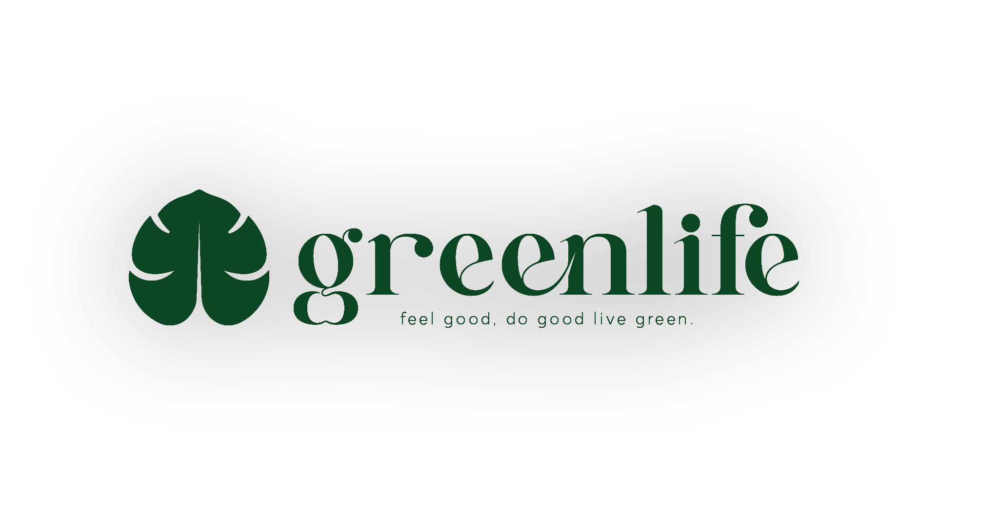
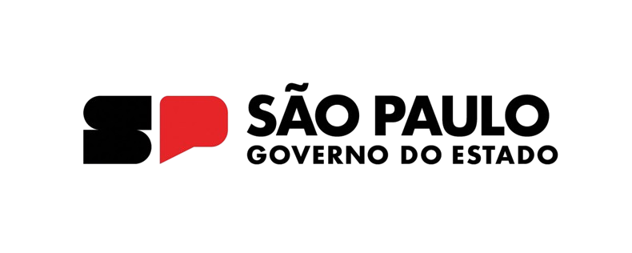
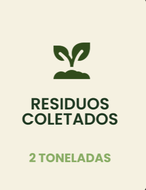
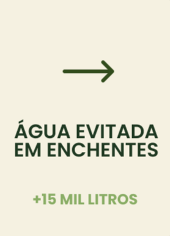
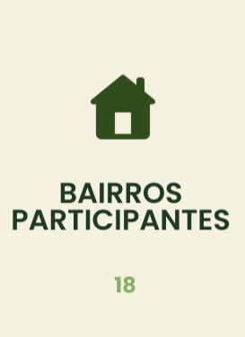
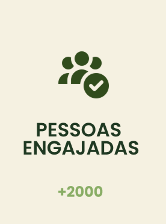

Quem
Somos?
Somos uma startup ecológica e sustentável, que visa viabilizar a higiene publica privada de forma eficiente.
Nosso objetivo é transformar o Brasil em uma referência em sustentabilidade e tecnologia global, globalizando nossos produtos, e viabilizando necessidades.
Cestas para
Bueiros
A situação do nosso país vem sendo seriamente comprometida pelo descarte inadequado de resíduos. Diante disso,
desenvolvemos nosso produto: uma cesta para bueiros. Embora possa parecer uma solução simples, possui grande potencial para auxiliar e contribuir significativamente para a sustentabilidade.
NOSSA EQUIPE


CONHEÇA NOSSOS
PARCEIROSQuando sustentabilidade e tecnologia se unem, o impacto é real.
Com o apoio do Governo da Cidade de São Paulo e do Banco Adopay, a GreenLife amplia seu impacto. Reduzindo enchentes, promovendo limpeza urbana e melhorando a qualidade de vida. A força das parcerias entre o setor público, o setor financeiro e a inovação sustentável mostra que o futuro das cidades depende de ações conjuntas.


.png)
LEVE O IMPACTO GREEN PARA O SEU BAIRRO!
SOLICITE JÁ A INSTALAÇÃO DAS CESTAS GREENLIFE E AJUDE A TRANSFORMAR A SUA RUA: GRATUITAMENTE!
Mais de 120 cestas instaladas em São Paulo SEU BAIRRO PODE SER O PROXÍMO
BENEFÍCIOS DA CESTA
   
COMO SOLICITAR?
É BEM SIMPLES, SIGA OS SEGUINTES PASSOS:
PREENCHA SEU ENDEREÇO
A EQUIPE GREENLIFE ANALISA A VIABILIADE
SEU BAIRRO ENTRA
PRO MAPA GREEN
AS CESTAS SÃO INSTALADAS